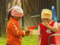
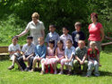
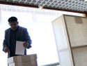
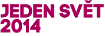

Přijíždíme se šapitó
do centra Brna i na okrajová sídliště.
Jsme filmový cirkus
proti rasismu a nesnášenlivosti.
Debatujeme a snažíme se nabourat
zaběhlé stereotypy.
Ústřední témata, kterými se zabýváme, jsou zaměřeny
na dvě známé české menšiny, Vietnamce a Romy.
Únor a březen
Svoboďák, Kohoutovice, Líšeň, Bystrc.
Nakonec předáme štafetu festivalu Jeden svět,
který v Brně proběhne 17. - 25. března 2014.
Program
18. 2. Náměstí Svobody
u morového sloupu
14.00h - odpolední program
výstava velkoformátových fotografií
Beautiful People od Šymona Klimana
promítání sociálních spotů
aktivity a hry pro děti i dospělé
18.00h - promítání dokumentu Banánové děti
+ debata s odborníkem na tématiku menšin PhDr. Imrichem Vašečkou.
↑
25. 2. Kohoutovice
na zastávce Stamicova,
trolejbusem č. 37 z Mendlova náměstí
16.00h - odpolední program
výstava velkoformátových fotografií
Beautiful People od Šymona Klimana
promítání sociálních spotů
aktivity a hry pro děti i dospělé
+ debata s etnoložkou Muzea romské kultury Janou Polákovou.
↑
4. 3. Líšeň
na zastávce Jírova, šalinou č. 8 z Hlavního nádraží
16.00h - odpolední program
výstava velkoformátových fotografií
Beautiful People od Šymona Klimana
promítání sociálních spotů
aktivity a hry pro děti i dospělé
+ debata s režiséry Fedorem Gálem a Martinem Hanzlíčkem.
↑
11. 3. Bystrc
na zastávce Zoologická zahrada,
šalinou č. 1, 3 nebo 11
16.00h - odpolední program
výstava velkoformátových fotografií
Beautiful People od Šymona Klimana
promítání sociálních spotů
aktivity a hry pro děti i dospělé
18.00h - promítání dokumentu Banánové děti
+ debata s odbornicí na migraci z Člověka v tísni Terezou Kušnirákovou.
↑
Filmy
35 měsíců s Natálkou
promítáme 4. 3. 2014 od 18h v Brně Líšni
Fedor Gál a Martin Hanzlíček · 58' · ČR · 2013

Byly jí necelé dva roky, když jedné noci na postel, kde spala,
vletěla zápalná láhev. Osmdesát procent spáleného těla,
měsíce v kómatu a umělém spánku, desítky těžkých operací.
Přežila. Byl to záměrný a promyšlený útok. Útok na domácnost,
kde žila nic netušící rodina, včetně čtyř malých holčiček.
Útok, který podle obžaloby provedli z rasistických důvodů
mladí neonacisté. Útok z čiré nenávisti. Před smrtí ji zachránili
lékaři, ale především láska rodičů, sester a lidí kolem.
Po mnoha měsících v nemocnici se Natálka učí vše od začátku – chodit,
mluvit, smát se. Zatím netuší, co ji čeká.
↑
Banánové děti
promítáme 18. 2. 2014 od 18h na náměstí Svobody
a 11. 3. 2014 od 18h v Bystrci
Martin Ryšavý · 60' · ČR · 2009

Zatímco dospělí Vietnamci žijící v České republice tráví
většinu času prací, česky mluví špatně a cítí stesk
po domově, jejich děti mluví česky mnohdy lépe než vietnamsky
a ke staré vlasti mají často neujasněný vztah. Jak cítí
svoji identitu? Jaké problémy řeší? Co jejich příběhy
vypovídají o vietnamské komunitě v ČR?
Dokumentární film režiséra Martina Ryšavého představuje
jak školáky z nižších tříd, tak maturanty nebo absolventy
českých vysokých škol. Jejich prostřednictvím diváci
nahlédnou do svérázného a vizuálně inspirativního prostředí
vietnamské komunity, považované často za dosti uzavřenou.
↑
Cikáni jdou do voleb
promítáme 25. 2. v Brně Kohoutovicích
Jaroslav Vojtek · 72' · ČR, Slovensko · 2012

Film slovenského režiséra Jaroslava Vojteka je příběhem
několika vzrušujících týdnů Vlada Sendreie. Terénní pracovník
a frontman populární skupiny Kokavakére Lavutáris se rozhodne
naplnit své politické ambice. S pomocí svého volebního týmu
a vybaven radami lidí z americké nadace rozjede živelnou
a spontánní předvolební kampaň. Vladovým cílem je získat
mandát krajského zastupitele a dostat tak romskou reprezentaci
do krajského úřadu. Tragikomický pohled na kampaň ukazuje
v duchu road movie nejen těžkosti, se kterými se musí
ambiciózní kandidát vypořádat, pokud chce uspět
v „gadžovském světě“, ale také pochybnosti, kterým čelí
v každodenních sporech s manželkou i uvnitř svého volebního
týmu. Vedle toho, že snímek vypráví o slovenských volbách
v roce 2009 a o jednom velkém snu, zachycuje také hledání
identity úspěšného Roma ve společnosti v 21. století.
↑
Anotace jednotlivých snímků jsou převzaty z webu České televize
(35 měsíců s Natálkou,
Banánové děti)
a filmového festivalu Jeden svět
(Cikáni jdou do voleb). Děkujeme.
Partneři Kiosku lidských práv

Tento projekt byl realizován za finanční podpory Evropské unie.
Za obsah sdělení odpovídá výlučně autor. Sdělení nereprezentuje
názory Evropské komise a Evropská komise neodpovídá za použití
informací, jež jsou jeho obsahem.
Kontakt
Máte dotazy? Chcete cokoliv sdělit organizátorům Kiosku?
Budeme rádi, když nás kontaktujete.
mail: info@kiosekbrno.cz
telefon: 730 939 872
fb: Kiosek lidských práv (facebook.com/kioseklidskychprav)
Pořadatel
Kiosek lidských práv organizuje občanské sdružení Plán B
a dobrovolníci festivalu Jeden svět Brno.